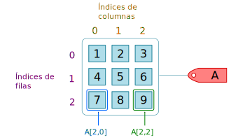
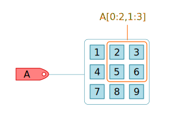

8. NumPy: estructuras matriciales¶
NumPy es una librería de Python que posibilita el trabajar con vectores, matrices y arreglos n-dimensionales de manera eficiente.
Para el resto del capítulo se asumirá que previo a cualquier código se habrá importado la librería NumPy utilizando el alias np, como sigue:
import numpy as np
8.1. Una introducción al array de NumPy¶
Para definir vectores y matrices, NumPy dispone de la función array, la cual recibe como argumento de entrada una lista de valores y/o una lista que contenga listas anidadas. La función array crea un objeto de la clase ndarray. Los objetos de la clase ndarray son la estructura básica de NumPy.
8.2. Arreglos unidimensionales (Vectores)¶
Para definir un arreglo unidimensional (vector), debemos pasar una lista de valores (usualmente numéricos), por ejemplo:
x = np.array([1,2,3,5,6,7,8,9,10])
type(x)
numpy.ndarray
El arreglo definido anteriormente podemos usarlo en operaciones aritméticas, y éstas se realizarán elemento a elemento, por ejemplo:
2*x
array([ 2, 4, 6, 10, 12, 14, 16, 18, 20])
Lo anterior multiplica cada valor contenido en el vector x por el valor numérico correspondiente. Enseguida se muestran algunos otros ejemplos:
x + 2
array([ 3, 4, 5, 7, 8, 9, 10, 11, 12])
x**2
array([ 1, 4, 9, 25, 36, 49, 64, 81, 100], dtype=int32)
Incluso podemos aplicar algunas funciones matemáticas que forman parte de NumPy, por ejemplo:
np.sqrt(x)
array([1. , 1.41421356, 1.73205081, 2.23606798, 2.44948974,
2.64575131, 2.82842712, 3. , 3.16227766])
np.sin(x)
array([ 0.84147098, 0.90929743, 0.14112001, -0.95892427, -0.2794155 ,
0.6569866 , 0.98935825, 0.41211849, -0.54402111])
8.2.1. La función linspace¶
La función linspace se utiliza para definir un arreglo unidimensional de N-elementos linealmente equiespaciados entre dos valores límites especificados, por ejemplo:
y = np.linspace(0, 10)
y
array([ 0. , 0.20408163, 0.40816327, 0.6122449 , 0.81632653,
1.02040816, 1.2244898 , 1.42857143, 1.63265306, 1.83673469,
2.04081633, 2.24489796, 2.44897959, 2.65306122, 2.85714286,
3.06122449, 3.26530612, 3.46938776, 3.67346939, 3.87755102,
4.08163265, 4.28571429, 4.48979592, 4.69387755, 4.89795918,
5.10204082, 5.30612245, 5.51020408, 5.71428571, 5.91836735,
6.12244898, 6.32653061, 6.53061224, 6.73469388, 6.93877551,
7.14285714, 7.34693878, 7.55102041, 7.75510204, 7.95918367,
8.16326531, 8.36734694, 8.57142857, 8.7755102 , 8.97959184,
9.18367347, 9.3877551 , 9.59183673, 9.79591837, 10. ])
La instrucción anterior crea un vector y con 50 valores numéricos entre 0 y 10. Si queremos establecer la cantidad de elementos, debemos introducir un tercer argumento que indique la cantidad de elementos:
z = np.linspace(0, 10, 11)
z
array([ 0., 1., 2., 3., 4., 5., 6., 7., 8., 9., 10.])
El arreglo z que resulta contiene 11 elementos entre 0 y 10.
8.2.2. La función arange¶
La función arange crea un arreglo unidimensional entre dos valores límites, utilizando un paso (o incremento) especificado. La sintaxis más general de arange es como sigue:
np.arange(start, stop, step)
Donde start es el valor límite inferior, stop el valor límite superior y step el paso. Observa el siguiente ejemplo:
np.arange(1,10,1)
array([1, 2, 3, 4, 5, 6, 7, 8, 9])
Podemos notar que el arreglo resultante incluye el valor límite inferior (start), pero no incluye el valor límite superior (stop); se debe tener mucho cuidado con este aspecto. Por defecto, el paso de la función arange es de 1, es decir, la instrucción anterior también se pudo haber indicado como sigue:
np.arange(1,10)
array([1, 2, 3, 4, 5, 6, 7, 8, 9])
La función arange también se puede invocar utilizando un argumento:
np.arange(5)
array([0, 1, 2, 3, 4])
En este caso se asume que el valor pasado como argumento corresponde a stop, y por defecto se asume que start=0 y step=1.
8.3. Arreglos bidimensionales (Matrices)¶
En NumPy, con la función array, se pueden definir y manipular matrices. Para crear matrices se debe pasar como argumento una lista de listas, donde cada sublista es una fila de la matriz. Por ejemplo vamos a suponer que se requiere crear la siguiente matriz \(A\):
En NumPy se definiría de la siguiente manera:
A = np.array([[1,2,3], [4,5,6], [7,8,9]])
A
array([[1, 2, 3],
[4, 5, 6],
[7, 8, 9]])
Podemos observar que cada sublista corresponde, efectivamente, a cada fila de la matriz. Debe cuidarse que cada sublista contenga exactamente el mismo número de elementos, de lo contrario la definición ya no correspondería a una matriz numérica, sino a un simple arreglo de arreglos.
8.3.1. Operaciones básicas¶
Para los propósitos de este texto, llamaremos operaciones básicas con matrices a la suma, resta y multiplicación de matrices. Supongamos cuatro matrices \(A\), \(B\), \(C\) y \(D\), definidas como sigue:
Para crearlas en NumPy haríamos lo siguiente:
A = np.array([[1,2],[3,4]])
B = np.array([[5,0],[-8,3]])
C = np.array([[11,4,9],[0,1,-4]])
D = np.array([[-5,6],[2,3],[12,1]])
Para sumar matrices utilizamos el operador +, por ejemplo, para calcular \(A+B\):
A + B # suma de matrices
array([[ 6, 2],
[-5, 7]])
Debemos recordar que la suma (y resta) de matrices es una operación que se realiza elemento a elemento, esto implica que las matrices involucradas deben ser del mismo tamaño. Si intentamos realizar una suma con matrices de diferente tamaño (\(A+C\)), entonces Python nos devolverá un mensaje de error:
A + C
---------------------------------------------------------------------------
ValueError Traceback (most recent call last)
~\AppData\Local\Temp/ipykernel_14480/486311815.py in <module>
----> 1 A + C
ValueError: operands could not be broadcast together with shapes (2,2) (2,3)
Como podemos observar Python lanza un ValueError y es muy explícito al indicar que dicha operación no se puede ejecutar con arreglos de ese tamaño.
La resta de matrices funciona de manera muy similar, con la consideración de que el operador involucrado en este caso es -:
A - B
B - A
La multiplicación de una matriz por un escalar se puede ejecutar utilizando el operador *, por ejemplo:
5 * D
array([[-25, 30],
[ 10, 15],
[ 60, 5]])
Naturalmente, se pueden formar expresiones que combinen la multiplicación por un escalar y la suma/resta matricial, por ejemplo si quisiéramos calcular \(3A + 10B\), se tendría:
3*A + 10*B
array([[ 53, 6],
[-71, 42]])
Para la multiplicación matricial se puede utilizar el operador @. En la siguiente línea se calcula el producto matricial \(AB\):
A @ B # multiplicación matricial
array([[-11, 6],
[-17, 12]])
Otra manera de efectuar una multiplicación de matrices es utilizando la función matmul:
np.matmul(A,B)
array([[-11, 6],
[-17, 12]])
Como es esperable, las reglas del álgebra de matrices se aplican al momento de efectuar la multiplicación de matrices, así que por ejemplo, no es lo mismo calcular \(DC\) que \(CD\).
D @ C
array([[-55, -14, -69],
[ 22, 11, 6],
[132, 49, 104]])
C @ D
array([[ 61, 87],
[-46, -1]])
El operador * cuando se aplica a dos estructuras matriciales no devuelve el producto matricial, sino que calcula una multiplicación elemento a elemento.
A * B
array([[ 5, 0],
[-24, 12]])
A @ B
array([[-11, 6],
[-17, 12]])
8.3.2. Matriz transpuesta, determinante y matriz inversa¶
La matriz transpuesta se puede calcular utilizando el atributo T o el método transpose de los objetos de la clase ndarray. Así que si quisiéramos calcular la transpuesta de la matriz \(A\) definida con anterioridad, podríamos hacerlo de las siguientes maneras:
A.T
array([[1, 3],
[2, 4]])
A.transpose()
array([[1, 3],
[2, 4]])
El determinante de una matriz podemos calcularlo utilizando la función det, la cual forma parte del submódulo linalg (linear algebra) de NumPy. Para importar dicha función podemos hacerlo de la siguiente manera:
from numpy.linalg import det
El determinante de la matriz \(B\) podríamos calcularlo como sigue:
det(B)
14.999999999999993
La matriz inversa de una matriz dada se puede calcular utilizando la función inv, la cual también forma parte del submódulo linalg. Para esto primero debemos importar dicha función mediante la siguiente instrucción:
from numpy.linalg import inv
Ahora podemos calcular, por ejemplo, la matriz inversa de \(A\) (definida en secciones anteriores):
inv(A)
array([[-2. , 1. ],
[ 1.5, -0.5]])
8.4. Algunas otras funciones para crear arreglos¶
NumPy dispone de muchas funciones para crear arreglos de forma predefinida. Con anterioridad revisábamos las funciones linspace y arange que nos sirven para crear arreglos unidimensionales en un cierto intervalo de valores. En NumPy disponemos también de la función ones que nos permite crear un arreglo cuyos elementos son todos unos, para ello únicamente hace falta especificar el tamaño del arreglo mediante una tupla, tal como se muestra enseguida:
np.ones((3,2))
array([[1., 1.],
[1., 1.],
[1., 1.]])
Observa que en el caso anterior se crea un arreglo de \(3 \times 2\), donde todos sus elementos son 1. Igual se puede pasar un sólo número como argumento y NumPy devolverá un arreglo unidimensional:
np.ones(10)
array([1., 1., 1., 1., 1., 1., 1., 1., 1., 1.])
De forma análoga la función zeros permite crear arreglos donde todos sus elementos son ceros, la sintaxis es similar. Observa el siguiente ejemplo:
np.zeros((5,4))
array([[0., 0., 0., 0.],
[0., 0., 0., 0.],
[0., 0., 0., 0.],
[0., 0., 0., 0.],
[0., 0., 0., 0.]])
Las funciones ones_like y zeros_like permiten crear arreglos de unos y ceros, respectivamente, pero sin indicar de forma explícita el tamaño, sino en su lugar se pasa como argumento un arreglo como indicador del tamaño, tal como se muestra enseguida.
x = np.array([[-4,5], [0,2]])
np.ones_like(x)
array([[1, 1],
[1, 1]])
np.zeros_like(x)
array([[0, 0],
[0, 0]])
Básicamente es como si le indicaramos a NumPy: créame un arreglo de puros ceros, cuyo tamaño sea el mismo que el del arreglo x.
La función diag permite crear un arreglo (o matriz) diagonal a partir de una lista de elementos. En el siguiente ejemplo se crea un matriz cuya diagonal principal está conformada por los elementos pasados como argumentos, y el resto de elementos serán ceros.
np.diag([1,2,3])
array([[1, 0, 0],
[0, 2, 0],
[0, 0, 3]])
Toma en cuenta que la función diag no solamente permite crear matrices diagonales, sino que podemos extraer la diagonal de un arreglo bidimensional existente, tal como se muestra enseguida.
A = np.array([[200,300],[500,100]])
np.diag(A)
array([200, 100])
La función eye nos permite crear una matriz identidad de \(n \times n\), para ello sólo hace falta indicar (en el argumento de entrada) la dimensión de dicha matriz.
np.eye(5)
array([[1., 0., 0., 0., 0.],
[0., 1., 0., 0., 0.],
[0., 0., 1., 0., 0.],
[0., 0., 0., 1., 0.],
[0., 0., 0., 0., 1.]])
8.5. Indexación y slicing¶
Para acceder a los elementos de un arreglo unidimensional NumPy proporciona una sintaxis similar a la de las secuencias nativas de Python, es decir, mediante la notación arreglo[k], donde k es un entero que corresponde al índice del elemento. Vamos a crear un arreglo x conformado por diez elementos:
x = np.array([10,20,30,40,50,60,70,80,90,100])
Si quisiéramos acceder al elemento 50, tendríamos que hacerlo utilizando el índice 4, es decir:
x[4]
50
Al igual que con las listas, los índices de los arreglos de NumPy comienzan en cero. Para obtener un subconjunto de elementos (slicing) podemos hacerlo mediante la notación arreglo[a:b], esto nos devolverá un arreglo que contiene los elementos desde el índice a hasta el b-1. Observa el siguiente ejemplo:
x[3:7]
array([40, 50, 60, 70])
La instrucción anterior nos devuelve un arreglo con los elementos ubicados en los índices \(3, 4, 5\) y \(6\) del arreglo x.
En el caso de arreglos bidimensionales se puede acceder a sus elementos utilizando la siguiente notación:
arreglo[i,j]
Donde i corresponde al índice de la fila y j al índice de la columna. Para ejemplificar, vamos a crear una matriz \(A\):
A = np.array([[1,2,3],[4,5,6],[7,8,9]])
A
array([[1, 2, 3],
[4, 5, 6],
[7, 8, 9]])
Si quisiéramos acceder al elemento ubicado en la tercera fila y tercera columna (número 9), entonces podríamos hacer lo siguiente:
A[2,2]
9
Para acceder al elemento en la tercera fila y primera columna:
A[2,0]
7
En la siguiente imagen puedes observar una representación gráfica de las instrucciones anteriores:

Puedes notar, como ya habíamos comentado, que los índices tanto de las filas como de las columnas en una matriz comienzan en cero. Así, si quieres acceder a la primera columna utilizas el índice 0, para la segunda el índice 1, y así de manera respectiva: el índice asociado a una cierta fila o columna será siempre una unidad menor al número de columna o fila correspondiente.
En el caso de que necesitemos acceder a toda una fila de la matriz podemos utilizar la siguiente notación:
arreglo[i,:]
Donde i corresponde al índice de la fila a la cual queremos acceder. Los dos puntos le indican a NumPy que se tomarán todos los elementos contenidos en la i-ésima fila de la matriz. Una instrucción de este tipo nos devolverá un arreglo unidimensional que contiene los elementos implicados.
Por ejemplo, si de la matriz \(A\) definida previamente queremos tomar la primera fila, entonces haríamos lo siguiente:
A[0,:]
array([1, 2, 3])
De manera análoga podemos tomar toda una columna de una matriz, la diferencia sería que ahora los dos puntos irían en el índice correspondiente al número de fila, es decir:
arreglo[:,j]
Donde j corresponde a la columna que queremos tomar. Por ejemplo, si de la matriz \(A\) queremos acceder a la tercera columna, entonces:
A[:,2]
array([3, 6, 9])
Es posible también acceder a un subconjunto de elementos de una matriz o arreglo bidimensional, para esto debemos utilizar la sintaxis de slicing para ambos índices, es decir:
arreglo[a:b, c:d]
Esto nos permitirá tomar todos los elementos ubicados en las filas cuyos índices son desde a hasta b-1, y en las columnas cuyos índices son desde c hasta d-1. Por ejemplo, la instrucción A[0:2, 1:3] nos devolverá la submatriz correspondiente a los elementos ubicados en la primera y segunda fila, pero que a la vez estén en la segunda y tercera columna de la matriz \(A\), tal como se muestra en la siguiente instrucción.
A[0:2,1:3]
array([[2, 3],
[5, 6]])
En la siguiente figura puedes observar una representación gráfica de esta operación.

filas = [[0,0],[2,2]]
columnas = [[0,2],[0,2]]
A[filas,columnas]
array([[0.83782012, 0.08297351],
[0.60980359, 0.97260032]])
8.6. Redimensionamiento de arreglos¶
NumPy permite redimensionar arreglos creados, para ello podemos utilizar el método reshape. Veamos el siguiente ejemplo, primero creamos un arreglo unidimensional x con seis elementos:
x = np.array([2,-3,0,1,6,9])
A partir de este arreglo podríamos crear un arreglo bidimensional de \(3 \times 2\), por ejemplo, o de \( 2 \times 3 \); la condición obvia que debe cumplirse es que la cantidad de elementos sea la misma. Como sabemos, tanto una matriz de \( 2 \times 3 \), como una de \( 3 \times 2 \), tienen seis elementos. Así, el vector x creado con anterioridad podríamos redimensionarlo como una matriz de \( 2\times 3 \):
x.reshape((2,3))
array([[ 2, -3, 0],
[ 1, 6, 9]])
O una de \( 3 \times 2 \)
x.reshape((3,2))
array([[ 2, -3],
[ 0, 1],
[ 6, 9]])
A = np.random.rand(50,50)
A
array([[0.09170665, 0.59451334, 0.24498697, ..., 0.65329292, 0.9782369 ,
0.47911003],
[0.66165808, 0.02339377, 0.94212241, ..., 0.70262667, 0.97944656,
0.05030964],
[0.77303326, 0.21621051, 0.27192161, ..., 0.31191906, 0.2999055 ,
0.19491791],
...,
[0.85318574, 0.41886355, 0.5784303 , ..., 0.72267358, 0.00993453,
0.03113168],
[0.82787003, 0.12330244, 0.53674444, ..., 0.87957997, 0.81816692,
0.94867884],
[0.16527444, 0.07380531, 0.03389322, ..., 0.70093572, 0.20509178,
0.81031204]])
A @ A
array([[11.99630467, 11.74031518, 11.04235772, ..., 12.39729593,
13.31424601, 11.71294837],
[12.38818369, 14.25120541, 12.36799321, ..., 12.38387286,
13.6239382 , 12.2118876 ],
[12.44571978, 14.97635162, 12.1288407 , ..., 13.76124779,
14.14751278, 12.69068118],
...,
[11.13329166, 12.21357223, 10.36362039, ..., 10.68387364,
12.55739116, 10.01697295],
[14.00299629, 15.63599859, 13.2811753 , ..., 15.08188953,
14.6169952 , 12.94433522],
[11.14133712, 13.52074626, 12.06437147, ..., 12.07747942,
11.43355352, 10.08706866]])